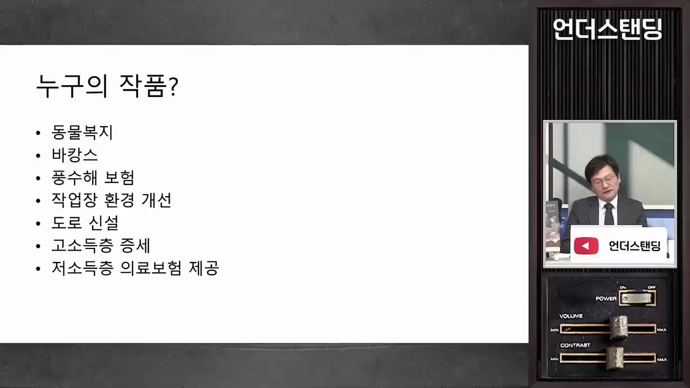
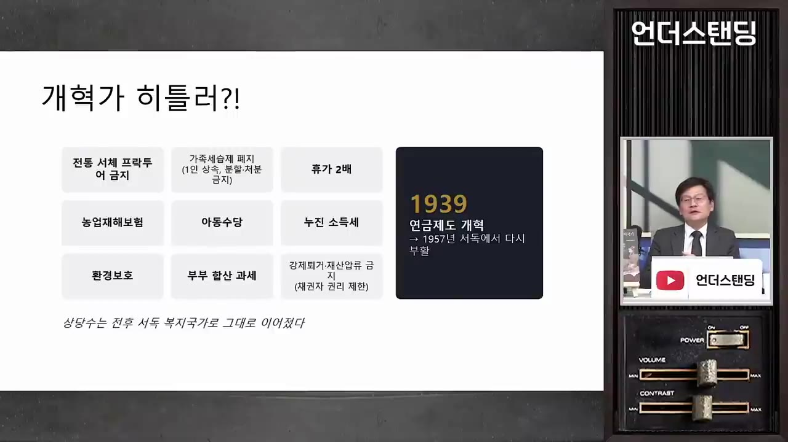
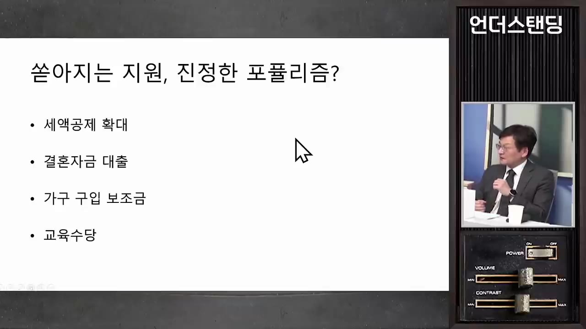
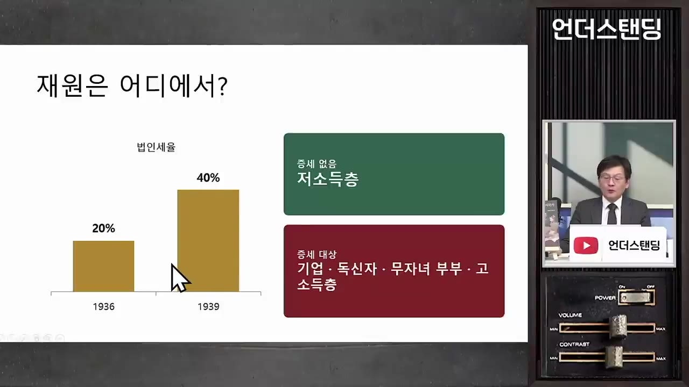
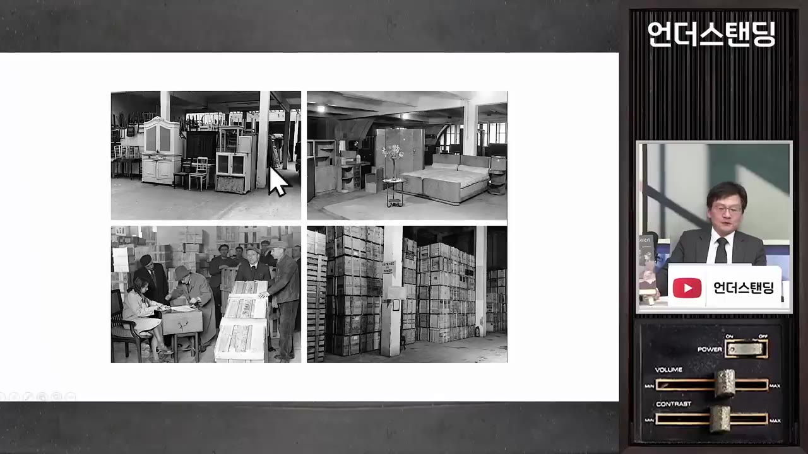
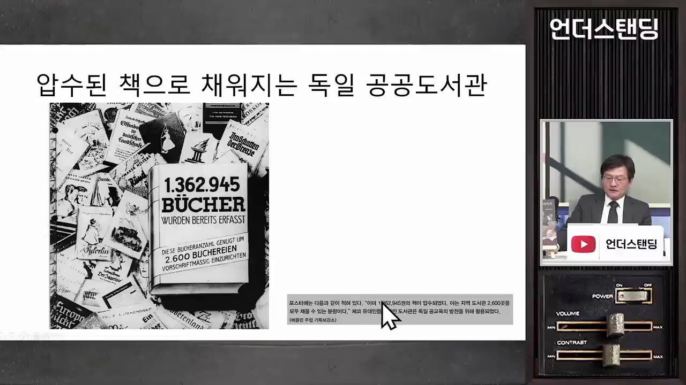
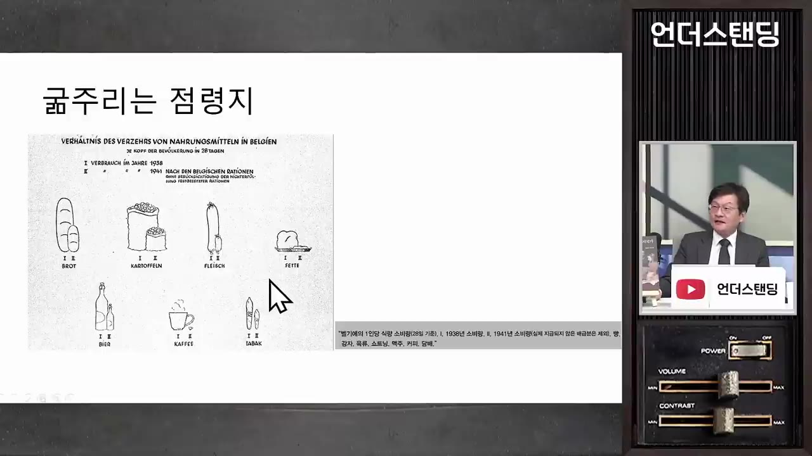
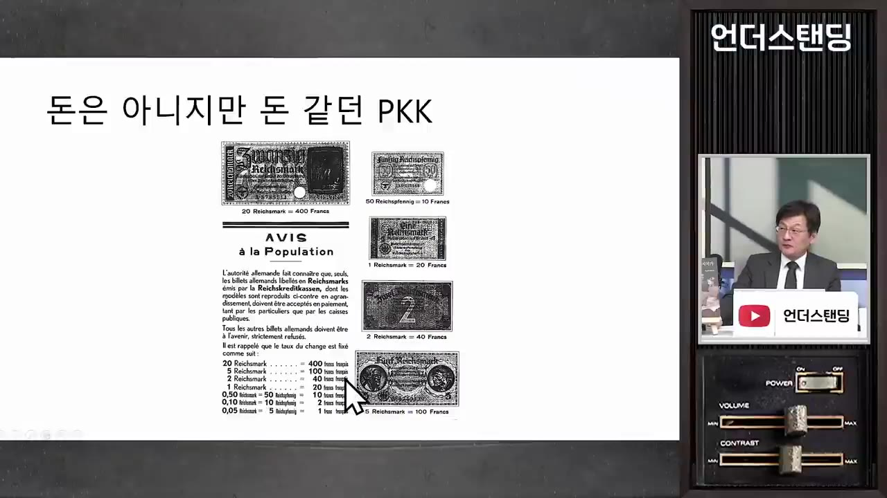
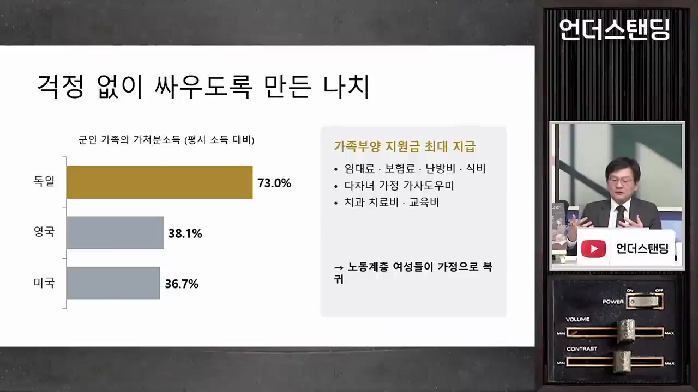
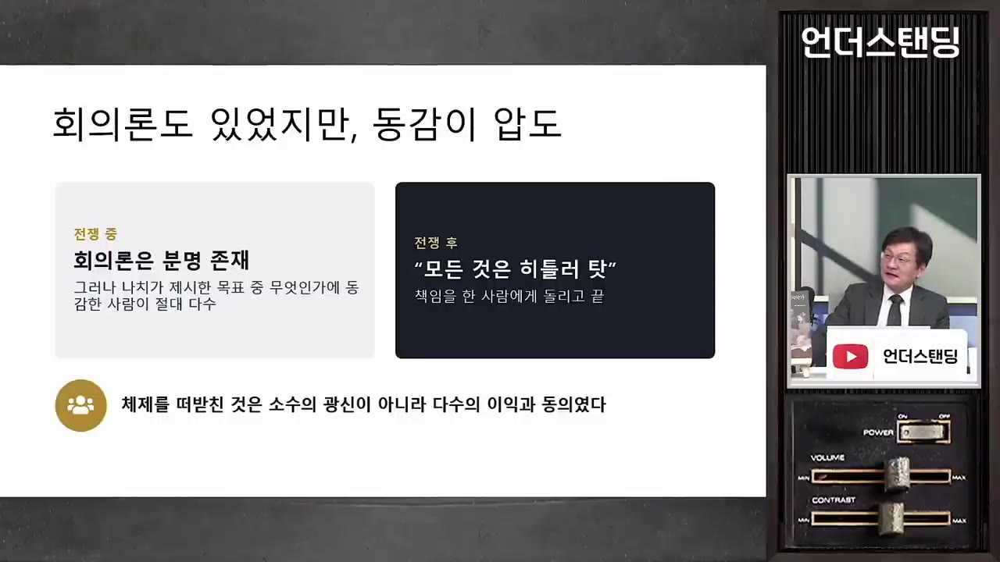

히틀러의 나치는 국민 세금 깎아주고 유대인 빈집·명품까지 털어 국민에게 나눠줬다 (법무법인 율촌 최준영 수석전문위원)
▶ 원본 영상 보기한눈에 보기
- 최준영 박사(법무법인 율촌)가 직접 번역한 괴츠 알리의 『히틀러의 복지국가』를 소개합니다. 책은 나치 체제가 강압이 아니라 국민 다수의 이익과 암묵적 동의로 유지됐다고 봅니다.
- 나치는 노동자 세금을 깎고 결혼 자금, 군인 가족 지원 같은 복지를 늘렸습니다. 대신 기업, 고소득층, 독신자, 무자녀 가구에 부담을 지웠고, 전쟁 중에도 보편적 증세(모든 국민에게 걷는 세금 인상)를 하지 않았습니다.
- 재원은 처음에 대기업 명의 어음(메포 어음)으로 돌려막았습니다. 1937년 무렵 이 방식이 한계에 이르자 유대인 재산 몰수와 점령지 수탈로 옮겨 갔습니다.
- 빼앗은 집, 가구, 옷, 장난감, 책은 경매와 배급으로 독일 국민에게 나눠졌습니다. 책은 이 과정에서 국민 모두가 '공범'이 됐는데도 전후에는 모든 책임이 히틀러에게 돌려졌다고 지적합니다.
- 최 박사는 불안한 오늘날 유럽 정세와 일자리가 줄어드는 AI 시대 청년들을 예로 들며 묻습니다. "부당하지만 나에게 이득이 되는 제안"을 우리는 거부할 수 있을까요?
이런 분께 도움이 됩니다
- 나치 독일이 패전 직전까지 내부 붕괴 없이 버틴 이유를 재정과 경제의 시각에서 이해하고 싶은 분
- 복지, 세금, 포퓰리즘, 전쟁 재정이 어떻게 맞물리는지 역사 사례로 보고 싶은 분
- 『히틀러의 복지국가』를 읽기 전에 핵심 논지를 먼저 알고 싶은 분
핵심 내용
책의 결론: 강압이 아니라 '이익 공동체'
- 책은 두 가지 질문에 답합니다. 하나는 전쟁 중 독일인의 일상이 어땠는지, 다른 하나는 6년 전쟁의 막대한 비용을 어디서 마련했는지입니다. (6:49)
- 저자 괴츠 알리의 결론은 이렇습니다. 나치가 국민을 쥐어짜 전쟁을 치른 것이 아닙니다. 국민과 나치가 이미 서로 이익을 나누는 이익 공동체였습니다. (7:57)
- 반유대주의는 바탕에 깔린 요소 하나였을 뿐입니다. 수많은 개인이 체제와 전쟁에서 실제로 이득을 봤다는 것이 핵심입니다.
- 1933년 집권 초에는 걱정이 많았습니다. 그러다 국민 사이에 "이 체제는 독일 민족을 위해 효과적으로 작동한다"는 신뢰가 생겼습니다.
- 1943~44년에는 이미 패전이 보였습니다. 그런데도 조직적인 저항, 대규모 항복, 반란이 거의 없었습니다. 최 박사는 이 현상이 바로 그 증거라고 봅니다. (4:38)
- 책은 2005년 독일에서 나왔고 영어판은 2010~11년쯤 나왔습니다. 최 박사는 10년을 기다려도 아무도 번역하지 않아 직접 번역했습니다. 오래된 책이라 2026년 관점에서는 맞지 않는 내용도 있을 수 있다고 직접 밝혔습니다.
- 최 박사가 관심을 갖게 된 계기는 귄터 그라스의 『게걸음으로』였습니다. "그 시절은 지옥 같지 않았다"는 회고담 같은 내용이라 논란이 됐습니다.
💡 나치는 국민을 억눌러서가 아니라 이득을 나눠 줘서 유지됐다. 이것이 이 책의 도발적인 핵심이다.
왜 이런 정책을 폈나: 계급 갈등을 민족 공동체로 바꾸기
- 나치가 본 문제는 이랬습니다. 1차 대전 전후로 독일은 사회주의자, 자본가, 노동자가 끝없이 싸웠습니다. 나치는 "한 민족이 왜 서로 싸우나"라고 물었습니다.
- 해법은 민족 공동체 안에서 실질적 평등을 이루는 것이었습니다. 독일 민족 안에서는 굶는 사람이 없고, 출신(귀족이나 하층)이 아니라 능력에 따라 역할을 맡도록 했습니다. (18:22)
- 그 대가로 계급 갈등을 인종 갈등으로 돌렸습니다. "우리 고통은 유대인 탓"이라고 전선을 바꾸고, 공동체 바깥은 착취와 학살을 해도 된다고 여겼습니다. (19:06)
- 그렇게 열정과 합리성이 결합됐습니다.
- 나치 핵심 인물은 대부분 20대 후반에서 30대 초반이었고, 60대 전통 관료들과 호흡을 맞췄습니다.
- 규정 때문에 막히는 문제가 생기면 당이 가장 빠른 해법으로 먼저 결정했습니다. 관료는 그 결정을 뒤따라 법제화했습니다.
- 최 박사는 열정만 있고 관료제가 없었다면 '중국판 문화혁명'으로 끝났을 것이라고 비유했습니다.
- 망명한 사회민주당(자막상 '에스페데', SPD) 쪽 인사들이 몰래 귀국해 쓴 보고서에도 비슷한 내용이 있습니다. "불만은 있지만 대체로 만족하며 평온하게 지낸다"는 것입니다. 훗날 총리가 되는 슈미트도 이런 일을 했다고 언급됩니다.
💡 '우리끼리는 평등하게, 바깥은 수탈해도 된다.' 이 암묵적 동의가 체제의 토대였다.
노동자에게 후했던 세금, 복지, 제도
- 세금
- 초과근무 수당의 근로소득세를 면제하거나 깎았습니다.
- 세액공제를 확대해, 같은 돈을 벌어도 저소득 육체노동자는 세금을 덜 냈습니다.
- 독신자와 무자녀 기혼 가구에는 세금을 더 물렸습니다. "민족 발전에 기여하지 않으면 그만큼 더 내라"는 논리였습니다. (30:08)
- 생활 지원
- 결혼 자금을 무이자나 저리로 빌려줬습니다.
- 가구 구입비를 대출이 아닌 보조금으로 줬습니다.
- 자녀를 셋쯤 두면 교육 수당과 의료보험 혜택을 줬습니다.
- 복지, 휴가, 인프라 (영상 첫 화면의 목록)
- 동물복지법
- 노동자 장기 여행 프로그램: 조금씩 돈을 내다가 선정되면 2주간 해외여행을 갔습니다.
- 농민 풍수해 보험
- 작업장 환경 개선
- 아우토반 건설
- 저소득층 의료보험
- 비용의 상당 부분은 고소득층 증세로 해결했습니다.

- 오래 묵은 개혁을 한 번에 처리 (15:00)
- 읽기 어려운 프락투어(Fraktur, 독일 전통 '수염 문자') 사용을 폐지했습니다.
- 농지를 한 사람에게 몰아주되 분할과 처분을 막던 가족 세습 관습을 없애고, 근대적 소유권으로 바꿨습니다.
- 소득세 개편을 했습니다(자막은 '노진 소득세'로 불분명하며, 누진 소득세로 추정합니다).
- 환경 보호 제도를 만들었습니다.
- 채권자 권리를 제한했습니다. 강제 퇴거와 압류를 줄였고, 최저 생활비는 압류하지 못하게 했습니다. 오늘날 압류 금지 금액 제도의 원형이라고 합니다.
- 연금: 보험료를 충분히 낼 수 있는 사람만 받던 사보험 같은 제도를 거의 전 국민 대상으로 넓히고, 저소득층에 더 주는 재분배 기능을 넣었습니다. 전쟁으로 중단됐다가 1957년 서독에서 거의 그대로 부활했습니다.

- 실제 소득은 늘지 않았습니다.
- 1928년 임금과 연금 수준을 1938년에야 회복했습니다.
- 시간당 임금은 오히려 내린 경우도 있었습니다.
- 그래도 복지가 쏟아져 국민은 살림이 나아졌다고 느꼈습니다. 최 박사는 이를 "포퓰리즘의 진가"라고 표현했습니다. (28:14)

전쟁 비용 1: 부자와 기업이 내고, 어음으로 돌려막기
- 집권 당시 실업자는 600만 명이었습니다. 1938년쯤에는 노동력이 모자라 실업자가 사라졌습니다. 국가가 계획하고 자본을 투입한 대규모 사업 덕분입니다. (24:32)
- 미국의 뉴딜은 금 소유를 금지해(영상에서는 10년 이상 징역이라고 설명) 국민의 금을 모은 뒤 달러를 평가절하해 재원을 만들었습니다. 독일은 국제 시장에서 돈을 빌리기도 어려웠습니다.
- 메포 어음(자막에는 '매포 어음'): 정부가 아우토반, 탱크 등을 발주하고 대금으로 어음을 줬습니다. 일종의 '돈 같지만 돈이 아닌 것'입니다. (26:03)
- 발행 주체는 국가가 아니라 화학, 기계 등 독일 대표 산업 4개 조합의 공동 명의였습니다. 뒷면에는 '국가 보증'이 적혀 있었습니다.
- 연 이자는 약 4%였습니다. 급하면 은행에서 할인해 현금으로 바꿀 수 있었습니다. 진행자는 '전경련 채권' 같은 느낌이라고 비유했습니다.
- 그래서 재군비와 복지를 하면서도 장부상 국가 부채는 늘지 않았습니다.
- 기업과 부자 증세
- 법인세는 1936년 20%에서 1939년 40%로 올랐습니다. 재군비로 돈을 번 중공업에 "국가 덕에 벌었으니 내라"는 논리였습니다. (29:46)

- 부동산 보유자에게는 "인플레이션으로 앉아서 버는 불로소득은 안 된다"며 평시 재산세의 10배를 일시 선납하게 했습니다. 관료는 5배, 당원은 20배를 주장하다 10배로 정했습니다.
- 원칙은 "누군가 목숨을 바치는 동안 누군가 전쟁으로 이익을 쌓아서는 안 된다"였습니다. 그래서 끝까지 보편적 증세가 없었고, 간접세도 거의 안 올리거나 오히려 내렸습니다.
- 전쟁 막판에 노동자가 마시는 맥주의 세금 인상안이 나오자, 나치 당 관리들이 필사적으로 막았습니다.
- 메포 어음 발행
- 기업·부자 증세
- 돌려막기 한계
- 유대인 재산 몰수
- 점령지 수탈
- 1메포 어음 발행
대기업 조합 명의의 국가 보증 어음으로 재군비와 복지 비용을 치렀습니다. 장부상 부채는 늘지 않았습니다
- 2기업·부자 증세
법인세를 20%에서 40%로 올리고 부동산 재산세 10배를 선납하게 했습니다. 독신자와 무자녀 가구에도 세금을 더 물렸습니다
- 3돌려막기 한계
세수보다 어음 발행량이 빨리 늘었습니다. 1937년쯤 더는 버틸 수 없게 됐습니다
- 재정 관료들이 긴축과 증세를 권했지만, 히틀러는 정권이 무너진다며 거부했다고 합니다
- 4유대인 재산 몰수
국내에서 '잉여'를 찾은 첫 대상이었습니다
- 5점령지 수탈
다른 나라를 점령해 그 부를 독일 민족이 나누는 방향으로 갔습니다
💡 영상 속 주장: 2차 대전에는 국내 재정으로 버틸 수 없는 복지 체제를 유지하려고 바깥을 털었다는 재정적 측면이 있다.
- 진행자가 "추측인가, 사실인가"라고 묻자 최 박사는 재정 당국의 문서 등으로 이미 정립된 사실이라고 답했습니다.
전쟁 비용 2: 유대인 재산 몰수와 재분배
- 1937년 당시에는 아직 전쟁 전이라 국제사회의 '보는 눈'이 있었습니다. 그래서 무조건 빼앗지 않고 합법의 외양을 갖췄습니다. (31:41)
- 재산 신고 의무화
- 국채로 강제 교환
- 싸게 매각·경매
- 공습 피해자 배정
- 국채 국고 귀속
- 1재산 신고 의무화
유대인에게 재산 신고 의무를 지우는 법을 만들고, 우선 신고만 받았습니다
- 2국채로 강제 교환
일정 금액 이상 보유자의 기업과 자산을 압류했습니다. 대신 시장에서 팔 수 없는 독일 국채를 줬습니다
- 3싸게 매각·경매
몰수한 회사와 물건을 독일 국민에게 시가보다 싸게 팔았습니다 (33:12)
- 함부르크 시내에 '세관 압류품 경매' 공고가 붙었습니다. 누구 옷인지 다 알면서도 시가의 10~15%에 샀습니다
- 빼앗은 아동복은 고아원끼리만 저가로 입찰하게 했습니다
- 4공습 피해자 배정
연합군 폭격으로 집을 잃었다고 신고하면, 공무원이 확인한 뒤 비어 있는 유대인 집을 원래 집보다 오히려 좋게 배정했습니다 (44:38)
- 책상, 옷, 장난감 등을 품목별로 분류해 두고 필요한 만큼 가져가게 했습니다
- 수천 대의 트럭과 화물열차로 지역 간 물량을 맞췄습니다

가구 등 몰수품을 분류해 쌓아 둔 창고 사진들 · ▶ 46:16 - 5국채 국고 귀속
학살당한 유대인이 갖고 있던 국채는 이자를 받으러 오는 사람이 없어 '합법적으로' 국고에 귀속됐습니다
- 유대인 몫이던 복지도 독일 민족에게만 돌아갔습니다
- 체코 유대인이 갖고 있던 독일어 책 136만 권을 압수해 독일 공공도서관에 나눠 줬습니다. 그래서 전쟁 중에 오히려 도서관 장서가 늘었습니다.

- 책의 절반쯤은 이런 내용을 당시 편지와 회의록으로 자세히 보여 줍니다. 더 가져가려고 연줄을 동원하는 사람들의 모습도 나옵니다.
- 진행자는 이를 '로또 청약 아파트'에, 국민이 느꼈을 감정은 박정희 정권 시절에 빗댔습니다. 영상 속 비유입니다.
💡 빼앗은 것을 '공평하고 효율적으로' 나눠 주면서 국민 전체를 공범으로 만들었다.
전쟁 비용 3: 점령지 수탈 (PKK 증서와 환율)
- 전시 경제의 고민은 넘치는 구매력이었습니다. 군수공장 3교대 근무로 월급 봉투가 두꺼워졌는데, 국내에는 살 물건이 부족했습니다.
- 미국은 전시 공채를 팔아 이 돈을 흡수했습니다.
- 독일은 점령지 물자로 해결했습니다. (38:54)
- PKK(제국 신용금고 증서): 점령지에서 병사에게 이 증서를 주고, 그 지역 은행에는 증서를 현지 화폐(예: 프랑)로 바꿔 주라고 명령했습니다. (39:40)
- 예시: 20마르크 증서를 400프랑으로 계산해 받았습니다.
- 결국 그 비용은 점령국 중앙은행을 털어 메웠습니다.
- 환율 조작: 마르크는 초강세로, 점령지 통화는 초약세로 고시했습니다. 1마르크로 바꿀 수 있는 현지 화폐가 전보다 몇 배 많아졌다는 예를 들었는데, 구체적인 숫자는 자막상 불분명합니다.
- 병사들은 구두, 양탄자, 버터, 명품을 사서 본국 가족에게 보냈습니다. 최 박사는 "요즘으로 치면 택배"라고 표현했습니다.
- 어떤 집에는 구두가 40켤레씩 쌓였습니다.
- 휴가 열차는 짐으로 터져 나갔습니다. "짐을 든 채 경례할 수 있을 만큼만"이라는 휴대 규정은 비판이 쏟아지자 폐지됐습니다.
- 프랑스, 벨기에 등 서부에 간 가족과 동부전선에 간 가족 사이에 질투가 생겼습니다. 가족이 전사한 집에는 아무것도 오지 않았습니다.
- 저자 괴츠 알리는 어릴 때 고모 집에 구두가 왜 그렇게 많았는지 물었다가 어른들의 얼굴이 굳는 것을 봤다고 합니다.
- 점령지를 접수하면 독일 중앙은행과 재무부 관료가 가장 먼저 들어가 환율과 수탈 방안을 짰습니다. "배를 가르지 않고 최대한 오래 뽑아 먹으려는" 관료와 "당장 필요한 것을 챙기려는" 군인이 자주 부딪혔습니다.
- 결과: 프랑스는 물가가 치솟고 물자가 사라졌습니다. 벨기에는 전쟁 전보다 빵, 커피, 맥주 소비가 크게 줄었습니다. (48:26)

- 점령과 관료 투입
- PKK 증서 지급
- 현지 은행 환전
- 현지 물건 구매
- 본국으로 발송
- 1점령과 관료 투입
중앙은행과 재무부 관료가 환율과 수탈 계획을 세웠습니다
- 2PKK 증서 지급
병사에게 신용금고 증서를 나눠 줬습니다

'돈은 아니지만 돈 같던 PKK' 증서 실물과 마르크·프랑 환산표 · ▶ 41:31 - 3현지 은행 환전
점령지 은행이 명령에 따라 증서를 현지 화폐로 바꿔 줬습니다
- 4현지 물건 구매
초강세 환율로 시장의 구두, 의류, 식료품 등을 사들였습니다
- 5본국으로 발송
우편이나 휴가 열차로 가족에게 보냈습니다
전쟁 중에도 유지된 생활 수준: 군인 가족 지원
- 전쟁 중에도 사치품 생산을 줄이지 않고 평소처럼 만들었습니다. 최 박사는 "이게 전쟁하는 나라인가 싶을 정도"라고 했습니다.
- 가장이 전선에 나가면 미국과 영국의 군인 가족은 소득이 크게 줄었습니다(자막상 '한 1분 정도', 불분명). 독일은 평시 소득의 약 73%를 현금으로 보전했습니다. (37:00)
- 추가 지원으로 임대료 할인, 퇴거 금지, 보험료 대납, 겨울 난방비, 식비 보조가 있었습니다. 자녀가 넷 정도면 가사도우미를 보내 줬고, 치과 치료비도 지원했습니다.
- 생계 때문에 공장에 나갔던 노동계층 여성들이 "안 나가도 되겠다"며 가정으로 돌아갔습니다. 남성은 직장, 여성은 가정이라는 나치의 이상과도 맞았습니다.
- 진행자는 이것이 꼭 포퓰리즘이라고만 볼 수는 없는 지원이라는 반응을 보였습니다.
- 최 박사는 1944년까지는 독일 국민 입장에서 "부담 없는 전쟁"이었다고 봅니다. 1945년 소련군이 동부로 밀려든 뒤에야 사정이 달라졌는데, 그것도 동부 이야기이고 서부는 그렇지 않았다고 합니다. (11:03, 1:00:20)
💡 미국과 영국은 자국민을 쥐어짜 전쟁을 치렀고, 나치 독일은 착취의 몫을 유대인과 점령지에 떠넘겼다.

전후: 라인강의 기적과 '모든 것은 히틀러 탓'
- 영국 장교 율리우스 포제너(독일 태생)의 증언이 나옵니다. 1944~45년 나폴리 등에서 시민들이 굶어 죽는 것을 보고 독일에 왔더니, 폐허 속에서 혈색 좋은 젊은 여성들이 깨끗한 흰옷을 입고 저녁 산책을 하고 있었다는 것입니다. 책의 마지막 대목입니다. (53:06)
- 최 박사는 라인강의 기적이 가능했던 이유 하나를 여기서 찾습니다. 수탈 덕분에 독일인은 상대적으로 잘 먹었고, 그래서 전후에도 일할 체력과 두뇌 활동 여력이 남아 있었다는 해석입니다. 반면 수탈당한 나라들은 사람을 움직이게 하는 것부터 다시 시작해야 했습니다.
- 승전국 영국은 1950년대까지 배급제를 했고, 다른 유럽 국가도 회복에 10년 이상 걸렸다고 합니다.
- 전후 독일 주부들은 "전쟁 때가 좋았다"고 했습니다. 미국 원조 옥수수를 "닭 모이"라 불평했고, 전쟁 중에는 제대로 된 밀가루와 보리를 넉넉히 받았다고 말했습니다.
- 책에는 "부모님께 물려받은 이 고가구는 정말 부모님이 산 것일까, 누군가의 피가 묻은 것은 아닐까"라고 스스로 묻는 독일인의 구절이 곳곳에 나옵니다.
- 저자가 꼬집는 지점은 이렇습니다. 6년 전쟁과 13년 정권을 다수의 동의로 유지해 놓고, 끝나자 모두가 순식간에 "히틀러 탓, 우리도 힘들었다"고 한 것입니다. 저자의 메시지는 "희생자 코스프레를 그만하라"입니다. (52:17)
- 다만 최 박사는 모든 독일인이 적극적으로 동의한 것은 아니며 반대하는 사람도 있었다고 덧붙였습니다. 가톨릭 신자, 기업가, 노동자 각자가 나치 목표 중 마음에 드는 것을 하나씩 갖고 있었다는 설명입니다.

오늘날에 던지는 질문
- 최 박사는 기존 체제가 지속 불가능하다고 느끼는 사회는 극단적 대안을 받아들인다고 봅니다. 그 대안이 실제로 작동하고 사람들이 원하는 것을 콕 집어 주면 지지를 얻는다는 것입니다.
- 최 박사의 전망: 프랑스의 혼란, 곧 있을 스페인 선거, 내년 프랑스 대선, 독일의 조기 총선 가능성을 들며 "100년 만에 비슷한 모습이 반복될 가능성은 없나"라고 묻습니다. (56:32)
- 일할 기회조차 얻기 어려운 AI 시대 20대에게 "부당하지만 인생이 바뀔 것 같은 일"을 제안하면 거절할 수 있을지도 묻습니다. (59:09)
💡 "원하는 것을 들어 줄게"는 정치의 근간이다. 그 방식이 부당해도 내게 이득이면 '아니오'라고 말할 수 있는가.
기억할 숫자·인용
| 항목 | 내용 |
|---|---|
| 실업자 | 집권 시 600만 명 → 1938년 노동력 부족 |
| 법인세율 | 1936년 20% → 1939년 40% |
| 부동산 재산세 | 평시의 10배를 일시 선납 (관료 5배, 당원 20배 주장) |
| 메포 어음 | 4개 산업 조합 공동 발행, 국가 보증, 연 4% 안팎 |
| 돌려막기 한계 | 1937년 |
| 임금·연금 | 1928년 수준을 1938년에야 회복 |
| 군인 가족 소득 보전 | 평시의 약 73% |
| 몰수품 경매가 | 시가의 10~15% |
| 압수 도서 | 체코 유대인 장서 136만 권 |
| PKK 예시 | 20마르크 = 400프랑 |
| 연금 제도 | 1957년 서독에서 부활 |
| 나치 정권 / 전쟁 | 13년 / 6년 |
- "누군가 목숨을 바치는 동안 누군가 이익을 취해선 안 된다." (나치의 증세 논리)
- "결국 모두가 공범이다. 희생자 코스프레를 그만하라." (최 박사가 요약한 책의 메시지)
- "불합리하지만 나에게 달콤한 것을 조금씩 즐겨 온 대중이 결국 히틀러의 조각들이었다." (진행자 정리, 57:38)
생각해볼 점
- 책의 시점과 논쟁성: 2005년 책이고, 최 박사도 지금 보면 틀린 부분이 있을 수 있다고 했습니다. 괴츠 알리의 '국민 다수의 이익 공동체' 테제에는 학계 반론도 있는 것으로 알려져 있습니다(내 의견). 그러니 강압과 테러의 역할을 지나치게 낮춰 읽지 않도록 다른 연구와 함께 보는 편이 좋습니다.
- 라인강의 기적 설명은 일부: '잘 먹어서 체력이 남았다'는 최 박사의 해석입니다. 마셜플랜, 화폐개혁, 냉전 구도 같은 다른 요인과 비교해 볼 필요가 있습니다(내 의견).
- 오늘날 비유의 한계: 진행자의 비유(로또 청약, 박정희 정권, 유류세 상한)와 최 박사의 유럽 전망은 대화 속 견해입니다. 사실관계로 단정하기보다 생각할 거리로 받아들이는 편이 맞습니다.
바로 해볼 일
- 『히틀러의 복지국가』(괴츠 알리 저, 최준영 역) 목차를 찾아보고, 앞쪽 절반(독일 내부)과 뒤쪽 절반(국가별 수탈) 중 관심 있는 쪽부터 읽기
- '메포 어음(Mefo-Wechsel)'을 검색해 영상 설명과 실제 구조 비교해 보기
- 최근 받은 정책 혜택 하나를 골라 "이 돈은 누구의 부담에서 나오나"를 한 줄로 적어 보기